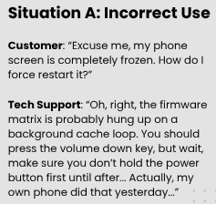
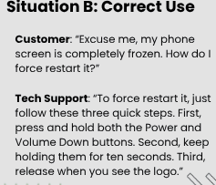
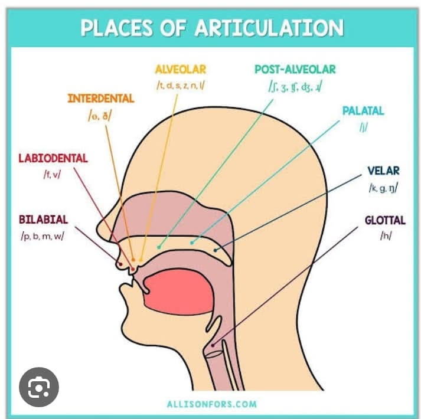
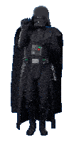

Pragmatics-Cooperative Principles (Maxim of Manner)
&
Phonetics (Consonants)
NUR ALEEYA SYAHMINA
&
MUHAMMAD KHAIDIR KAMIL
Scroll down or use the shortcuts to begin exploration.
The Maxim of Manner is a core component of Paul Grice’s Cooperative Principle. While other conversational maxims deal with what information is shared, the Maxim of Manner strictly governs how that information is presented to the listener, structurally and linguistically. To adhere to this maxim, a speaker must follow four distinct sub-maxims.
Understanding the Maxim of Manner is essential for effective communication for two main reasons:
i. Maximizes Efficiency: It prevents communication breakdowns by ensuring speakers structure their thoughts logically, saving the listener’s time and effort.
ii. Decodes Hidden Meanings: It helps us identify “implicatures”—hidden messages created when people intentionally break the rules to be indirect or evasive.

Why situation B failed:

Why situation B succeeded:
Definition: A consonant is a speech sound that is produced with some restriction or closure in the vocal tract that impedes the air flow from the lung.
Consonants vs. Vowels: These are the three major differences between consonantds and vowels.

| Manner / Place | Bilabial | Labiodental | Alveolar | Velar | Glottal |
|---|---|---|---|---|---|
| Plosive | p b | t d | k g | ʔ | |
| Nasals | m | n | ŋ | ||
| Fricative | f v | s z | h | ||
| Liquids | l r | ||||
| Glides | w | j |
Instructions: Test your expertise! The system will queue exactly 3 random consonant sounds one by one. Select the correct Place and Manner of Articulation. Be careful—a single wrong answer causes an immediate system crash (Game Over)!

Presentation concluded by Nur Aleeya & Muhammad Khaidir.